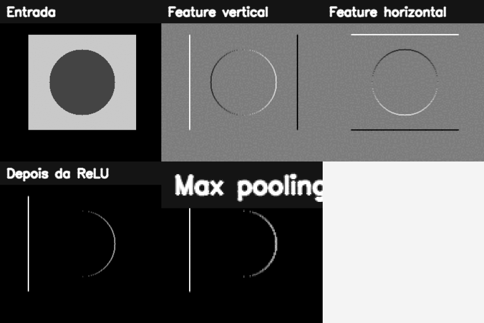

16. Construindo Redes Neurais Convolucionais¶
O que você aprenderá¶
Neste capítulo, você deixará de tratar CNN apenas como “caixa pronta de inferência” e estudará como construir uma rede convolucional de classificação. O objetivo é entender dimensões, parâmetros, ativação, pooling, perda, validação e overfitting.
Ao final, deverá conseguir:
- explicar por que não é ideal achatar uma imagem logo no início;
- compreender conectividade local e pesos compartilhados;
- calcular dimensão de saída de uma convolução;
- compreender filtros e feature maps;
- calcular número de parâmetros de
Conv2D; - explicar ReLU;
- compreender pooling e stride;
- diferenciar
FlatteneGlobalAveragePooling; - diferenciar Softmax e Sigmoid;
- escolher perdas para multiclasse e multirrótulo;
- compreender treino, validação e teste;
- reconhecer overfitting;
- usar augmentation com cautela;
- compreender dropout, weight decay e early stopping;
- evitar vazamento de dados.
CNNs exploram estrutura espacial e compartilhamento de pesos para aprender representações hierárquicas com menos parâmetros do que camadas densas aplicadas diretamente aos pixels (GOODFELLOW; BENGIO; COURVILLE, 2016; CHOLLET, 2021).
16.1 Por que não começar com Flatten?¶
Uma imagem 1000 × 1000 × 3 possui:
Se conectarmos diretamente a uma camada densa de 1000 neurônios:
Isso ignora explicitamente a estrutura espacial local e cria enorme quantidade de parâmetros.
16.2 Conectividade local¶
Uma convolução 3 × 3 observa apenas uma pequena vizinhança por vez.
Analogia: lupa¶
Em vez de tentar analisar a fotografia inteira com uma regra diferente para cada posição, usamos uma pequena lupa que percorre a imagem procurando o mesmo padrão.
16.3 Pesos compartilhados¶
O mesmo kernel é aplicado em várias posições.
Isso incorpora a hipótese de que uma borda pode ser relevante no canto esquerdo ou direito.
Essa propriedade reduz drasticamente a quantidade de parâmetros.
16.4 Feature map¶
Cada filtro produz um mapa de respostas.
Se uma camada possui 32 filtros:
independentemente de a entrada possuir 1 ou 3 canais.
Cada filtro aprende uma forma diferente de responder à entrada.
16.5 Fórmula da dimensão¶
Para um eixo com:
- entrada
N; - kernel
K; - padding
P; - stride
S;
Exemplo 1¶
Entrada 32, kernel 3, padding 0, stride 1:
Saída: 30.
16.6 Padding same¶
Com kernel ímpar e stride 1, padding="same" normalmente preserva altura e largura.
Isso adiciona valores nas bordas para permitir convolução também nas posições periféricas.
16.7 Stride¶
Stride define o passo da janela.
Camadas com stride maior podem substituir ou complementar pooling.
16.8 Quantos parâmetros há numa convolução?¶
Para:
cada filtro possui:
mais 1 bias.
Total:
Exemplo 2¶
16.9 ReLU¶
Ela introduz não linearidade.
Importante¶
Valores negativos não são necessariamente “erros”. A função simplesmente define uma transformação que a rede aprende a utilizar.
16.10 Max Pooling¶
Uma janela 2 × 2 com stride 2 reduz aproximadamente pela metade cada dimensão espacial.
Analogia: resumir um bairro pelo sinal mais forte¶
Dentro de uma pequena região, preservamos a resposta máxima e descartamos detalhes de posição fina.
16.11 O que pooling ganha e perde?¶
Ganha:
- redução de custo;
- maior campo receptivo relativo;
- tolerância a pequenos deslocamentos.
Perde:
- resolução espacial;
- localização precisa.
Por isso, tarefas de segmentação/detecção precisam de arquiteturas que recuperem ou preservem informação espacial.
16.12 Campo receptivo¶
O campo receptivo é a região da entrada que pode influenciar uma ativação.
Empilhar convoluções aumenta o campo receptivo.
Duas convoluções 3 × 3 consecutivas enxergam uma região efetiva maior que uma única 3 × 3, além de introduzir mais não linearidades.
16.13 Flatten¶
transforma mapas:
em um vetor.
Pode gerar muitos parâmetros quando seguido por Dense.
16.14 Global Average Pooling¶
calcula uma média por canal, produzindo um vetor de tamanho igual ao número de canais.
Isso frequentemente reduz parâmetros em relação a Flatten + Dense grande.
16.15 Softmax¶
Para classes mutuamente exclusivas:
podemos usar:
As saídas formam uma distribuição normalizada entre as classes.
16.16 Sigmoid para multirrótulo¶
Se uma imagem pode possuir simultaneamente:
as classes não competem entre si.
Cada saída é independente.
Softmax e sigmoid respondem a problemas diferentes
Escolher a ativação errada altera a própria formulação estatística da tarefa.
16.17 Função de perda¶
Multiclasse com rótulo inteiro:
Multiclasse com one-hot:
Multirrótulo:
A perda precisa combinar com a representação do alvo e a saída da rede.
16.18 Modelo Keras didático¶
from tensorflow import keras
from tensorflow.keras import layers
modelo = keras.Sequential([
layers.Input((64, 64, 3)),
layers.Conv2D(32, 3, padding="same", activation="relu"),
layers.MaxPooling2D(2),
layers.Conv2D(64, 3, padding="same", activation="relu"),
layers.MaxPooling2D(2),
layers.GlobalAveragePooling2D(),
layers.Dense(64, activation="relu"),
layers.Dense(10, activation="softmax"),
])
modelo.summary()
16.19 Calculando dimensões do exemplo¶
Entrada:
Após Conv same 32 filtros:
Após Pool 2:
Após Conv 64:
Após Pool:
Após Global Average Pooling:
16.20 Treino, validação e teste¶
Treino¶
Usado para atualizar pesos.
Validação¶
Usada para selecionar hiperparâmetros e acompanhar generalização.
Teste¶
Deve permanecer separado para avaliação final.
Usar teste repetidamente durante desenvolvimento transforma-o, na prática, em validação.
16.21 Overfitting¶
Sintoma típico:
A rede está ajustando peculiaridades dos dados de treino que não generalizam.
Analogia: decorar o gabarito¶
Um aluno pode memorizar respostas específicas sem aprender o conceito. Vai muito bem nas questões conhecidas e mal nas novas.
16.22 Data augmentation¶
Exemplos:
- pequenas rotações;
- translações;
- zoom;
- variação de brilho;
- espelhamento.
Mas a transformação deve preservar o rótulo.
Augmentation precisa respeitar semântica
Espelhar um dígito, uma placa, uma imagem médica ou uma orientação anatômica pode mudar o significado.
16.23 Dropout¶
Durante treinamento, dropout desativa aleatoriamente parte das ativações.
Ele atua como regularização, mas não é remédio universal.
16.24 Weight decay¶
Penalizar pesos muito grandes pode ajudar a controlar complexidade.
Em frameworks modernos, isso pode aparecer como regularização L2 ou variantes desacopladas do otimizador.
A escolha deve ser validada experimentalmente.
16.25 Early stopping¶
callback = keras.callbacks.EarlyStopping(
monitor="val_loss",
patience=5,
restore_best_weights=True
)
Interrompe o treino quando a validação deixa de melhorar por um período.
16.26 Vazamento de dados¶
Se frames do mesmo vídeo aparecem em treino e teste, a rede pode memorizar fundo, iluminação e identidade da sequência.
Da mesma forma, imagens da mesma pessoa ou objeto físico em diferentes splits podem inflar métricas.
Divida dados por unidade independente relevante:
- pessoa;
- paciente;
- vídeo;
- propriedade;
- dispositivo;
- sessão.
16.27 Métrica adequada¶
Acurácia pode ser enganosa em classes desbalanceadas.
Considere também:
- precisão;
- revocação;
- F1;
- matriz de confusão;
- métricas por classe.
A métrica precisa refletir o custo do erro.
16.28 Exemplo integrado do capítulo¶
O código do capítulo 16 possui uma parte NumPy/OpenCV autocontida e uma parte Keras opcional.
Pipeline didático:
imagem sintética
↓
kernels manuais
↓
feature maps
↓
ReLU
↓
max pooling
↓
cálculo de dimensões
↓
CNN Keras opcional
↓
summary e parâmetros

16.29 Erros comuns¶
| Sintoma | Causa provável | Correção |
|---|---|---|
| Dense gigantesca | Flatten cedo demais | pooling/GAP |
| shape incompatível | dimensão calculada errada | acompanhe cada camada |
| loss não converge | alvo/loss/ativação incompatíveis | revise formulação |
| treino ótimo, validação ruim | overfitting | regularização/dados |
| teste “bom demais” | vazamento | refaça split |
| augmentation piora | rótulo não preservado | restrinja transformações |
| acurácia alta em classe dominante | desbalanceamento | métricas por classe |
16.30 Perguntas de revisão¶
- Por que CNN usa conectividade local?
- O que são pesos compartilhados?
- Como calcular dimensão da convolução?
- Quantos parâmetros possui Conv
3×3, entrada 3 canais, saída 32 filtros? - Para que serve ReLU?
- O que pooling perde?
- Qual diferença entre Flatten e GAP?
- Quando usar Softmax?
- Quando usar Sigmoid?
- O que é vazamento de dados?
Exercícios de fixação¶
Exercício 1¶
Calcule dimensões de saída para entrada 64, kernels 3 e 5, strides 1 e 2.
Exercício 2¶
Calcule parâmetros de uma Conv2D 5×5, 3 canais de entrada e 16 filtros.
Exercício 3¶
Calcule parâmetros de uma Conv2D 3×3, 32 canais de entrada e 64 filtros.
Exercício 4¶
Aplique um kernel manual e ReLU a uma imagem simples.
Exercício 5¶
Implemente max pooling 2×2 em NumPy para uma matriz pequena.
Exercício 6¶
Compare Flatten e GlobalAveragePooling2D quanto ao tamanho do vetor produzido.
Exercício 7¶
Construa uma CNN Keras com duas convoluções e imprima summary().
Exercício 8¶
Explique qual saída/perda escolher para 5 espécies mutuamente exclusivas.
Exercício 9¶
Explique qual saída/perda escolher para uma imagem que pode conter simultaneamente 5 objetos.
Exercício 10¶
Simule curvas de treino/validação com overfitting e indique onde early stopping deveria agir.
Exercício 11¶
Proponha cinco augmentations para fotografias de objetos e explique quais preservam o rótulo.
Exercício 12¶
Dê um exemplo em que espelhamento muda o rótulo.
Exercício 13¶
Planeje um split correto para um dataset com 100 vídeos de 20 pessoas.
Exercício 14¶
Explique por que dividir frames aleatoriamente pode causar vazamento.
Síntese¶
CNNs combinam conectividade local, compartilhamento de pesos e aprendizado hierárquico. Construir uma rede exige acompanhar dimensões e parâmetros, formular corretamente saída e perda e, principalmente, avaliar generalização em dados realmente independentes. Uma arquitetura elegante não compensa um experimento com vazamento ou uma métrica inadequada.
Referências¶
CHOLLET, François. Deep Learning with Python. 2. ed. Shelter Island: Manning, 2021.
GOODFELLOW, Ian; BENGIO, Yoshua; COURVILLE, Aaron. Deep Learning. Cambridge: MIT Press, 2016.